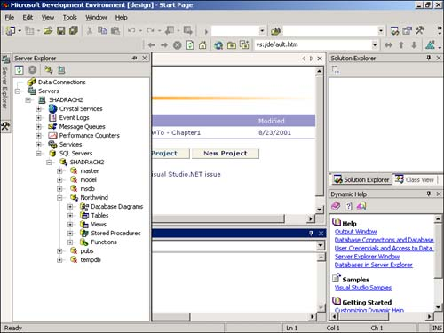

Tables and columns, like other objects in your database, have properties that allow you to control the data that is going into your tables. For example, in the Customers table, you can see the properties for the first column, called CustomerID. The extent to which you use the properties depends on what your needs are.
At the table level, you also have properties that you can utilize that help you create and enforce business rules, which are discussed later in this chapter.
You will create your tables by breaking down your data into logical entities. When you do so, you need to keep in mind how you break them down, and you need to break them down so that they are created in what is called normalization.
SQL Server has come a long way over the years. For every version, Microsoft works hard not only to make SQL Server more powerful, but also easier to work with. This includes tools that come with the product and from other applications. Visual Studio .NET is a good example of tools for working with SQL Server from another product.
If you are not familiar with databases, here's a quick overview. Databases allow you to work with data in a manner that reflects the real world on the computer. You can take a real subject, such as Customers, and store that information in tables. A file cabinet is analogous to a database. Within the file cabinet you may have your client folders. Other folders might contain information on Orders or Invoices. One of these folders could be compared to a table of customers. Within the Customers folder, you might have individual pages of information on a customer. Each page that you have on an individual customer would be a row, or a record within a table. On each page, you would have pieces of information such as Customer Name, Address, Phone, and so on. These would be fields, or columns, within each row.
In a database, you will also have objects that allow you to query information within tables and update information. In SQL Server, you will use Views, Stored Procedures, and Functions to view and update data within the database. To use these objects, you need to be able to create them. To create a database along with its tables in SQL Server, you can use code or tools that came with SQL, such as the Enterprise Manager, if you have installed one of the versions that include these tools.
Fortunately, you can use tools that are built within Visual Studio .NET to create and modify your databases. The primary tool you will use is called the Server Explorer, as shown in Figure 2.1.
